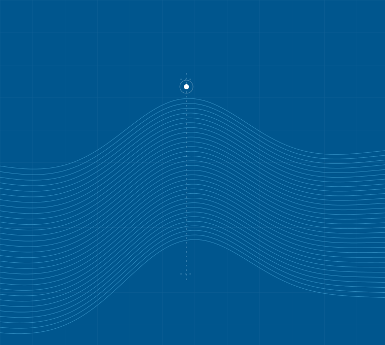

Точный полевой исполнитель
Выполняем программу работ, сохраняем критические компетенции и обеспечиваем качество полевых данных
01 / НАПРАВЛЕНИЕ HR-СЕССИИ
Миссия, видение и ориентиры компании
← Все направления HR-сессии
СТРАТЕГИЯ РАЗВИТИЯ
От точного полевого исполнителя —
к оператору полного цикла управления
минерально-сырьевой базой
НАША МИССИЯ
Обеспечение ПАО «Газпром» рентабельной минерально-сырьевой базой и достоверными данными о недрах на всём жизненном цикле месторождений и ПХГ
Формулировки в документеВыполняем программу работ, сохраняем критические компетенции и обеспечиваем качество полевых данных
Формируем и реализуем портфель геологоразведочных работ
Опираемся на единую верифицированную базу данных
ВИДЕНИЕ
Оператор полного цикла управления минерально-сырьевой базой Группы «Газпром», не уступающий лучшим компаниям отрасли по качеству подготовки запасов, рациональному использованию средств на геологоразведочные работы и срокам их выполнения
СТРАТЕГИЧЕСКАЯ ЦЕЛЬ
ООО «Газпром недра» является единым оператором в группе ПАО «Газпром» по управлению минерально-сырьевой базой на всём жизненном цикле месторождений и ПХГ
Лидер на рынке геологоразведочных и нефтегазосервисных услуг в сегментах: строительство поисково-оценочных и разведочных скважин, геофизические работы и исследования скважин, сейсморазведочные работы
Сохранение жизни и здоровья людей, производственных активов и экологическая безопасность
Возможности раскрыть талант, построить карьеру и реализовать себя
Экономический результат и качество информации, необходимой заказчику
ВЫБОР НАПРАВЛЕНИЙ
ОТ БАЗЫ К ЦЕЛИ
17 ключевых показателей по 7 приоритетам
База — 2026 год
Целевой горизонт — 2030 год
| Показатель | 2026 | 2027 | 2028 | 2029 | 2030 |
|---|
* Расчёт эффективности оборудования автоматизируется в 1С:УП
Целевые типы культуры — на главной HR-сессии (раздел «Корпоративная культура»)
Доля внешнего рынка сейсморазведки: одна из четырёх партий при отсутствии объёмов в периметре ПАО «Газпром» и недозагрузке собственных мощностей
ОТ ОБСУЖДЕНИЯ К РАБОТЕ
11 решений стратегической сессии
8–9 октября 2026 года · Санкт-Петербург
Сроки указаны по протоколу
Данные о выполнении поручений не предоставлены